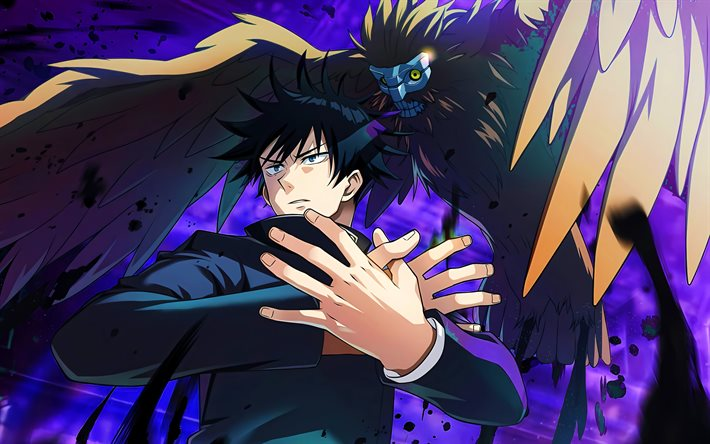

Sobre Megumi Fushiguro

Salvaré a las personas, aunque sea de forma selectiva.
Intereses: Leer libros de no ficción, ver documentales y la tranquilidad. Odia la comida con pimiento rojo y a las personas arrogantes. En su tiempo libre le gusta quedar con Yuji Itadori y Nobara Kugisaki, sus amigos de la Escuela de Hechicería.
Trayectoria: Desde muy joven fue indentificado por Satoru Gojo debido a su potencial ilimitado. Actualmente es una pieza clave en la lucha contra Ryomen Sukuna.